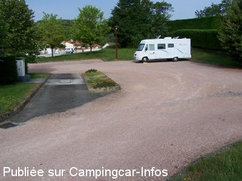
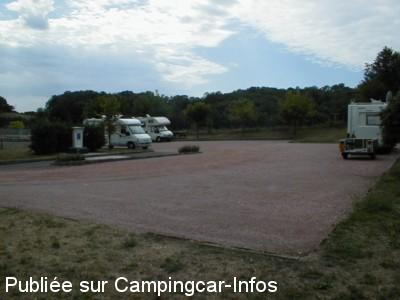

ASN = Aire de services avec stationnement nuit possible de :
CAYROLS
(N° 458)
Accès/adresse :
Rue de l'étang
D51
15290 CAYROLS
D51
15290 CAYROLS
Latitude : (Nord) 44.82994° Décimaux ou 44° 49′ 47′′
Longitude : (Est) 2.23294° Décimaux ou 2° 13′ 58′′
Tarif : 2015
Stationnement gratuit
Services : 3,80 €
Paiement par jetons
Services :


Tous commerces
Autres informations :
Ouverte d'avril à octobre
10 emplacements
Tel : +33 (0)471 461 920

Le 15/07/2010 par sicard

Le 25/08/2003 par Robert Artonne
de
Noelie
le 09/10/2015 :
De passage dans le Cantal une halte pour la nuit sur l'aire de Cayrols très agréablement surpris par les alentours et la propreté !!
Merci à la commune de penser à nous camping cariste
De passage dans le Cantal une halte pour la nuit sur l'aire de Cayrols très agréablement surpris par les alentours et la propreté !!
Merci à la commune de penser à nous camping cariste
de
claire70
le 07/05/2015 :
Nous y avons dormi début mai. Nuit calme.
à 200 m direction le village y a un magasin qui vend en direct leur fabrication de charcuterie.
Nous avons acheté du fromage dans le village ROUGET à 2 km conseillé par un camping cariste du département. On peut se garer sans problème sur la place vers l'église.
La magasin SPAR est un peu plus loin à droite en redescendant la route qui rejoint la nationale.
Le commerçant est sympa. Les fromages très bons à prix corrects. Dans ce village il y a tous services pharmacie poste...
Nous y avons dormi début mai. Nuit calme.
à 200 m direction le village y a un magasin qui vend en direct leur fabrication de charcuterie.
Nous avons acheté du fromage dans le village ROUGET à 2 km conseillé par un camping cariste du département. On peut se garer sans problème sur la place vers l'église.
La magasin SPAR est un peu plus loin à droite en redescendant la route qui rejoint la nationale.
Le commerçant est sympa. Les fromages très bons à prix corrects. Dans ce village il y a tous services pharmacie poste...
de
roberto
le 30/01/2015 :
aire tres sympa village sympa b t s j ai fais mes courses dans ce village
aire tres sympa village sympa b t s j ai fais mes courses dans ce village
de
didier84
le 25/08/2014 :
Bonjour,nous y sommes ce 24 Août 2014,petite aire très bien entretenue ainsi que les sanitaires (WC et lavabo))
Calme,agréable une aire comme nous aimons..
Merci à cette petite municipalité pour cette réalisation.
Bonjour,nous y sommes ce 24 Août 2014,petite aire très bien entretenue ainsi que les sanitaires (WC et lavabo))
Calme,agréable une aire comme nous aimons..
Merci à cette petite municipalité pour cette réalisation.
de
sicard
le 15/07/2010 :
aire spacieuse et peu fréquentée. la proximité de la RN122 apporte un peu de nuisances mais bon....c'est très sympa.
aire spacieuse et peu fréquentée. la proximité de la RN122 apporte un peu de nuisances mais bon....c'est très sympa.
de
Robert Artonne
le 24/08/2003 :
Commune de 232 habitants entre Figeac et Aurillac, un seul commerce qui fait aussi dépot de pain. Aire superbe et très bien conçue. Merci à la municipalité.
Commune de 232 habitants entre Figeac et Aurillac, un seul commerce qui fait aussi dépot de pain. Aire superbe et très bien conçue. Merci à la municipalité.
de
Fama80
le 20/08/2003 :
Lieu très calme et proche de maisons, parking avec WC, en face jeux pour les enfants, tennis, piste VTT.
Lieu très calme et proche de maisons, parking avec WC, en face jeux pour les enfants, tennis, piste VTT.